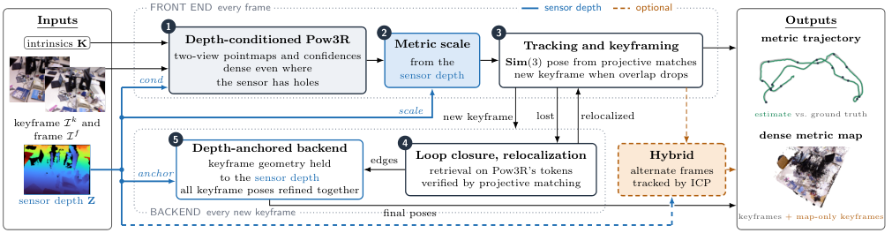
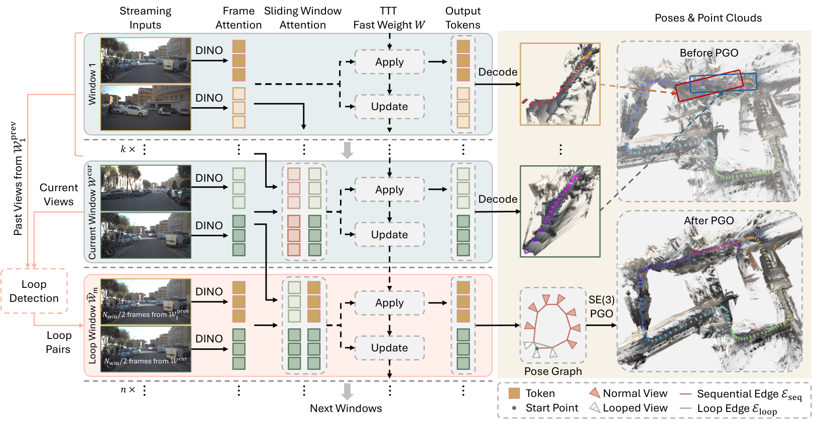
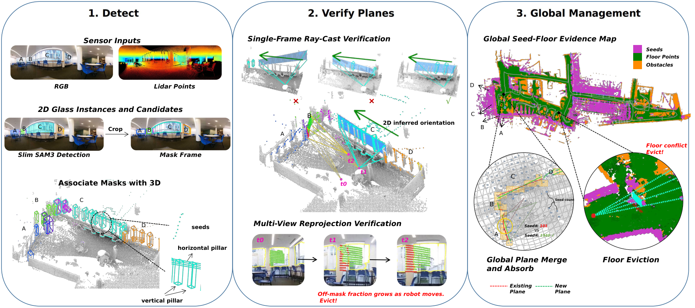
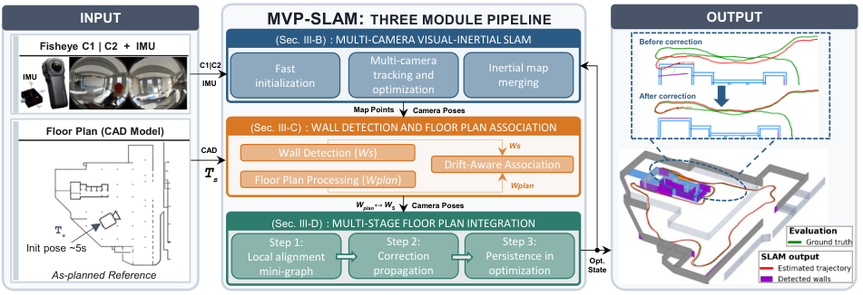
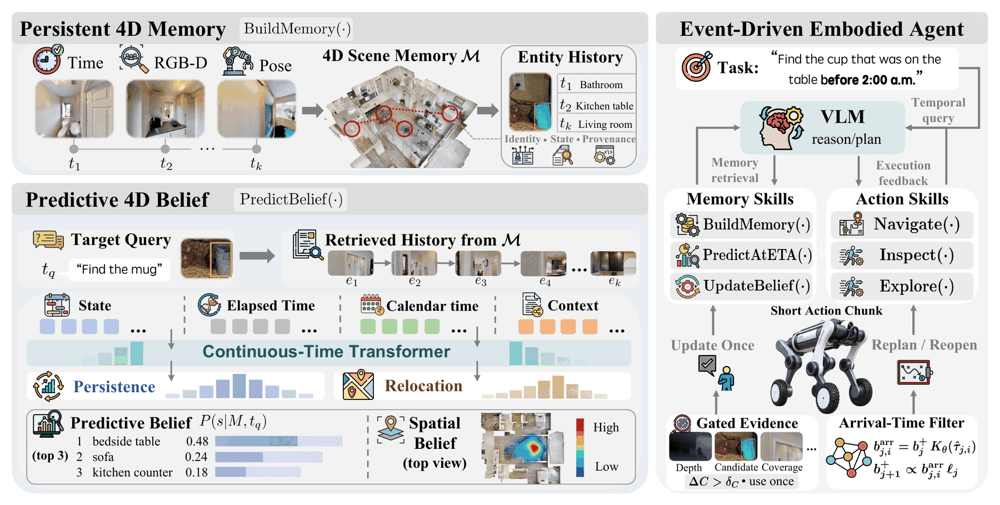

Executive Summary
前馈 3D 正从“短窗输出”转向可长期运行的 SLAM 组件。 Pow3R-SLAM 用深度条件、尺度恢复与软锚定把两视图 pointmap 接入 RGB-D 后端；CLoSeR 则用 loop-conditioned window 和 SE(3) PGO 给流式 LoGeR 补上闭环。二者的消融都说明：决定长期可用性的不是单次重建画质，而是尺度、约束拓扑与失败恢复。
主动感知的目标开始从几何覆盖转向“信息增益与任务风险”。 Matisse 用后验协方差和熵减做训练外视角选择；GlassGuard 把透明面遗漏改写成可供规划器消费的风险地图；EvolvingNav 把陈旧记忆拆成持续/迁移信念，并用可见性限定的负证据更新。
工程上最值得追踪的是“显式失败模式”。 本期深读论文都给出了清晰边界：错误稠密深度会拖垮 Pow3R-SLAM，CLoSeR 不能修复前端完全失败，GlassGuard 依赖近垂直平面，MVP-SLAM 依赖可匹配墙面，EvolvingNav 在随机动态上优势收窄。这些边界比单个平均指标更能决定落地价值。
Deep-read Papers
| 论文 | 系统/框架图 | 解决的问题 | 方法 / 结构 | Insight 与数学知识 | 实验与效果 | 复现与启发 | 阅读证据 |
|---|---|---|---|---|---|---|---|
| Pow3R-SLAM RGB-D SLAMFeedForward 3D |
 Fig. 2：深度条件、尺度恢复、关键帧/闭环、深度锚定后端与可选 ICP。 |
把只保证局部一致性的两视图 pointmap 模型变成度量 RGB-D SLAM，并兼顾稀疏深度、长序列与地图稠密化。 | cond：把深度作为 Pow3R 条件；scale：用预测/传感器深度比的几何均值恢复度量尺度；anchor：后端对关键帧深度施加软约束。位姿图在 Sim(3) 上优化，编码器 token 用于重定位/闭环，map-only keyframe 增密，可交替 pointmap 与 point-to-plane ICP。 | 尺度估计实质是对乘性误差取 log 后求中心量；Sim(3) 吸收前馈几何的尺度漂移，深度锚定再把全局解拉回度量空间。消融显示条件化首先降低轨迹误差，尺度恢复主要改善几何，锚定只做最后收敛。 | TUM 平均 ATE 0.027 m（MASt3R-SLAM 0.030）；7-Scenes 0.044 vs 0.048；Replica 0.0087 vs 0.0153，但完美深度下 ORB-SLAM3 为 0.005。24 场景逐帧 SE(3) ATE 0.037 vs 0.116。仅 3% 深度像素仍 0.026 m；密集错误深度噪声 σ=0.4 时升至 0.609 m。 | 值得复现 cond/scale/anchor 三步增益与错误深度压力测试。作者仅承诺录用后开源；目前没有可核验实现。自相似纹理仍会形成高置信错误对应。 | 全文级：HTML 全文；Intro、Sec.3、Sec.4、Tables 1–10、消融、失败案例、Conclusion/Limitations 与附录。系统图已视觉确认。 |
| CLoSeR Streaming 3DLoop Closure |
 Fig. 2：流式窗口、SALAD 闭环候选、loop-conditioned window 与 SE(3) PGO。 |
LoGeR 一类流式基础模型只在局部窗口内连贯，长序列会漂移；传统几何闭环又难直接对齐前馈模型的隐式表示。 | SALAD 全局描述子检索闭环候选；将一半历史帧与一半当前帧组成闭环条件窗口，让同一 backbone 估计跨环约束；顺序边与闭环边统一进入带 Huber 的 SE(3) PGO。模型已给出全局尺度，因此避免额外 Sim(3)/SL(4) 自由度。 | 关键 insight 是“闭环约束也由 backbone 在其熟悉的窗口分布里估计”。SE(3) 的低自由度形成结构正则；VBR 消融中 Sim(3)/SL(4) 都劣于 SE(3)，说明不必要的尺度/投影自由度会放大噪声。 | DROID-W ATE 0.75 m（LoGeR 1.44，LingBot-Map 0.91）；Oxford Spires 5.26 m（LoGeR 6.88）。VBR 完整模型 11.15 m，去闭环 36.16。KITTI 7.12 FPS、15.69 GiB，LoGeR 7.60 FPS、16.65 GiB；ATE 12.79 vs 25.44。 | 公开仓库含 4 个数据集 runner、SALAD detector、PGO 与评测脚本。需 BF16 GPU（README 指 compute capability ≥8.0）和 LoGeR/SALAD 权重。闭环只能修正累计漂移，无法挽救激烈运动/动态场景下的前端完全失败。 | 全文级 + 代码静态：全文、附录、运行/资源表与消融；检查 README、loop detector、稀疏求解器、脚本、依赖。未运行。系统图已视觉确认。 |
| Matisse Active ReconstructionInformation Gain |
 Fig. 1：真实机器人主动采集、视角选择与重建结果；caption 明确为方法总览。 Fig. 1：真实机器人主动采集、视角选择与重建结果；caption 明确为方法总览。 |
主动重建通常需要专门训练的 NBV 网络或昂贵渲染；同时关键帧冗余导致流式前馈重建计算浪费。 | 直接读取 Stream3D 的 evidential memory，把注意力证据解释为高斯精度并得到后验协方差；用候选视角的几何可见性近似未来证据，以熵减计算 information gain。对象级聚合兼顾遮挡与均衡，receding horizon 负责多步计划；同一分数也用于关键帧筛选。 | 对高斯信念，信息增益可由 log-determinant 协方差下降表示；一阶近似把昂贵“先观测再重建”化成可见性加权的精度增量。它把生成模型内部的不确定性变成规划目标，而不另训策略。 | 摘要报告 CD 相对最佳 baseline：GSO30 -12.7%、YCB-V -3.8%、Replica -9.2%，GSO30 端到端 1.50× 加速。Replica CD 19.103 mm，最佳比较方法 21.028。YCB-V 仅 4 视角 CD 6.760，Stream3D 用 24 视角为 6.994；真实 AgileX+D455 用 19 帧覆盖 11 个对象。 | 优先验证“证据→协方差”的校准，而非只复跑 CD。生成器产生不可信补全、对象关联失败或融合不一致都会污染 uncertainty。论文未给出可核验代码入口。 | 全文级：全文、推导、Tables、主/附录消融、真实机器人设置、Limitations。Fig.1 caption 与图像已视觉确认。 |
| GlassGuard Glass MappingPlanning Safety |
 Fig. 2：分割、结构平面候选、图像射线验证、多视图确认与全局管理。 |
LiDAR 对玻璃/镜面常返回空值，导航栅格会把真实障碍当作自由空间；单帧视觉补全又容易产生大面积 false occupancy。 | Slim SAM3 产生玻璃 mask；从 LiDAR 垂直/水平支柱提出度量平面，用无需深度的图像射线几何校验方向；多视图重投影、地面证据与全局 merge/absorb 管理平面，最后注入规划扫描。 | 目标不是普通 IoU，而是同时最大化 glass coverage、最小化 traversable free space spill。全局管理相当于对短时误检做时序证据积累；angle gate 体现覆盖率与安全污染之间的可控 Pareto 取舍。 | 9 场景/6 环境、2.1 km。GG-360 ever coverage 85.2%，spill/frame 15.3；MonoGlass3D 61.0%/290.2，GlassRecon 44.4%/85.4。系统 1.7 GB VRAM、0.74 s/frame（RTX 5070 Ti laptop）。去 angle gate 覆盖 86.1% 但 spill 34.0；去全局管理 spill 87.7。 | 可把“风险层”作为独立代价地图接入现有局部规划器。论文只做定性 planner integration，未给导航成功率/碰撞率闭环评估。近垂直平面假设和 0.74 s 更新周期限制高速场景。 | 全文级：全文、系统/分割/消融表、运行时、长程统计、Limitations。未找到代码仓库。系统图已视觉确认。 |
| MVP-SLAM Multi-camera VIOFloor-plan Prior |
 Fig. 2：双鱼眼+IMU、鲁棒初始化、墙面感知、平面图约束与持久 BA prior。 |
地下/工业环境中纹理弱、运动激烈且跨相机重叠少，传统 VIO 易失跟；已有平面图若硬对齐，也会把错误墙面关联扩散到全局。 | 基于 ORB-SLAM3 的对向双鱼眼+IMU：快速跨相机 seed，失败时用 gyro fallback；失跟后做惯性 map merge。EoMT 语义墙面结合竖直 RANSAC；关联门限随距上次可靠墙面的路径长度增大并封顶。约束先进入局部 4DoF mini-graph，再传播到 pose graph，最后保留各向异性 prior 进入 BA。 | 分阶段注入先隔离数据关联风险，再让可靠约束成为持久先验；只约束墙法向与平面偏移，避免把平面图不确定方向等同为全 6DoF 真值。 | Hilti-Trimble 2026：Localization 平均 RMSE 0.29 m（2/22），SLAM 0.24 m（5/62）。去平面图时 1.45→0.29 m（4.9×）与 0.73→0.24 m（3.0×）。墙检测 P/R/F1 96.9/38.4/55.0，关联 F1 98.9%。UG1 某序列完整初始化恢复 100% coverage，简化版 96.7% 且误差 28 m。 | 高精度低召回是刻意的安全策略，工程上应优先复核错误关联的尾部风险。开放/柱状地下空间缺少墙面时约束弱；作者把柱子、地图增密和闭环列为后续。未发现代码入口。 | 全文级：全文、挑战赛设置、消融、初始化失败案例、结论/限制。系统图已视觉确认。 |
| EvolvingNav Persistent NavigationPredictive World Model |
 Fig. 2：版本化 4D memory、到达时信念、事件驱动负证据更新与工具控制器。 |
长期导航中，曾看见的对象会移动，latest-only memory 把陈旧状态误当现状；重搜又浪费路径与检查预算。 | 以带时间戳与 provenance 的 RGB-D entity version 建 4D memory；连续时间 transformer 将 belief 分成 persistence、relocation 与 unknown。事件过滤器按到达时间传播候选，用可见性限定且经校准的检测概率做软贝叶斯负证据更新，并用 coverage delta 防止同一证据重复使用；冻结 VLM 选择 inspect/explore/navigate 等工具。 | 状态转移核按行归一化，arrival-time belief 将“现在在哪里”改成“抵达时可能在哪里”。负证据只有在对象本应可见时才成立；软更新比 hard removal 保留传感器漏检不确定性。候选 reopening 使动态世界中的曾否决位置可以恢复。 | EvoWorld-Bench：54 场景、4,860 scene-days、803.68k tasks。first-inspection/search SR 61.32/86.18，DynaMem 45.33/71.94。N4 dynamic SR 65.2 vs PredictiveGraphs 46.8。64 次 LYNX M20 匹配试验：34.4/48.4/24.3% first/search/recovery，平均 43.8 m。去预测信念 first-inspection 仅 12.51%。 | 仓库含 Habitat runner、belief/transition 训练、校准、单测；运行需 HSSD/Habitat-Sim、Grounding DINO+SAM2，并可能调用外部 VLM API。优势主要集中在有可学习规律的动态，随机动态上弱于或接近直接基线。 | 全文级 + 代码静态：v2 全文、附录、benchmark 生成、真实机器人、消融/校准；检查代码结构与测试。未运行。系统图已视觉确认。 |


Repo Deep Dives
| Repo | 目标与能力 | 代码结构证据 | 依赖 / 硬件 | 成熟度判断 | 领域关系 |
|---|---|---|---|---|---|
| MoyangLi00/CLoSeR 4★ / 0 forks / 0 open issues GitHub API 快照：2026-10-03 |
长上下文 streaming reconstruction + loop closure；仓库声称复现 KITTI、VBR、Oxford Spires、DROID-W，并提供点云可视化。 | loger/utils/loop/detector.py 实装 DINOv2+SALAD、缓存描述子、阈值/NMS/最小帧间隔；fastloop/solve_python.py 构造稀疏正规方程；scripts/run_*.sh 覆盖 4 个数据集；eval/ 含相对位姿、深度与 C++ benchmark。不是只有 README。 |
Python 3.11；PyTorch 2.7.1+CUDA 12.8、GTSAM、OpenCV、SciPy、viser。需 LoGeR 与 SALAD checkpoint；README 要求 BF16、compute capability ≥8.0。 | 研究发布早期但复现骨架完整。 runner、下载脚本、评测和核心闭环代码齐全；无自动化测试目录，许可证字段未声明，权重与数据是外部依赖。未本地执行。 | 把“基础模型流式几何”接回传统 SLAM 的 place recognition + PGO，是 FeedForward 3D 与几何后端融合的直接样例。 |
| ZJU4EmbodiedAI/EvolvingNav 0★ / 0 forks / 1 open issue GitHub API 快照：2026-10-03 |
持续动态世界中的预测式 4D belief、证据更新与事件驱动导航；含 benchmark 网站、训练和 Habitat runner。 | memory.py 维护因果 entity version 与 RGB-D provenance；transition_model.py 实现 chronological transition；filter.py 做 current/arrival belief 和 evidence rounds；agent.py/controller.py 组织工具动作；scripts/ 含数据打包、belief/transition 训练、校准；tests/ 有 3 组单测。 |
Python 3.11、Habitat-Sim 0.3.3、HSSD/Navmesh、PyTorch；感知路径需 Grounding DINO 与 SAM2。可选冻结 VLM controller 需要 API key；数据体量与模型权重未在本次下载验证。 | 代码覆盖论文组件，但部署链条重。 结构、命令和测试较完整；仓库同时混合论文站点与代码，许可证字段未声明。需多套数据/模型与 Habitat 环境，未端到端复现。 | 把 world model 从静态 scene graph 推进到可校准的时序 belief；适合研究长期导航中的 stale memory、检查策略与失败恢复。 |
| WeiYuFei0217/StreamRig 3★ / 0 forks / 1 open issue GitHub API 快照：2026-10-03 |
冻结多视图基础模型，仅训练 Rig-Resampler、CausalBridge 与 pose head，把同步多相机 rig 变成流式里程计。 | stream_model.py 连接冻结 MapAnything 与轻量模块；stream_bridge.py 明确 anchor snapshot mask；stream_cache.py 用逐层 KV cache 保存历史 group、重放 anchor；tests/test_cache_equiv.py 检查流式/整窗等价；configs/、预处理、训练、评测脚本覆盖 NCLT/KITTI-360。 |
PyTorch 2.9.1、Python 3.12 复现环境；vendored MapAnything、OpenCV、evo。KITTI-360 标准配置为 4 GPU、global batch 16、10 epochs，4 相机×16 latent/rig；权重 checksum 已给出。 | 发布契约与测试较强。 目录含 10 余项 cache/config/shape 测试、双语 README、权重校验；许可证 API 为 NOASSERTION，外部数据预处理复杂。未验证训练成本或零样本指标。 | 展示多相机几何如何在不微调大 backbone 的前提下进入因果流；对车载/人形多相机 VIO 前端设计有参考价值。 |
Quantitative Experiment Highlights
| 来源 | 数据集 / 场景 | 指标 | 结果 | 解释边界 |
|---|---|---|---|---|
| Pow3R-SLAM | TUM / 7-Scenes / Replica | ATE RMSE | 0.027 / 0.044 / 0.0087 m；MASt3R-SLAM 为 0.030 / 0.048 / 0.0153 m。 | Replica 使用理想深度时 ORB-SLAM3 仍更低（0.005 m）；结果不能外推到严重错误深度。 |
| Pow3R-SLAM 消融 | 组合数据集与 Replica map | Sim(3) ATE / Chamfer | 无 prior 0.0834 / 9.55 cm；+cond 0.0319 / 6.58；+scale 0.0260 / 3.07；+anchor 0.0257 / 3.05。 | 说明三模块作用不同；不是每一项都带来同等轨迹收益。 |
| CLoSeR | VBR / KITTI | ATE / FPS / 显存 | VBR 11.15 m，去闭环 36.16；KITTI 12.79 m，LoGeR 25.44；7.12 FPS、15.69 GiB。 | KITTI 附录正文出现 12.66 的文字差异，本报告采用表格 12.79；未独立复跑。 |
| Matisse | Replica / YCB-V | CD / 视角数 | Replica 19.103 mm vs GauSS-MI 21.028；YCB-V 4 视角 CD 6.760，Stream3D 24 视角为 6.994。 | CD 改善不等于任务成功率；依赖生成器与对象融合质量。 |
| GlassGuard | 9 场景、6 环境、2.1 km | ever coverage / spill per frame | GG-360 85.2% / 15.3；MonoGlass3D 61.0% / 290.2；GlassRecon 44.4% / 85.4。 | planner 集成仅定性，没有闭环碰撞/导航成功率；spill 定义与场景标注需复核。 |
| EvolvingNav | EvoWorld-Bench / LYNX M20 | first-inspection / search / recovery SR | Bench 61.32/86.18（DynaMem 45.33/71.94）；真实机器人 34.4/48.4/24.3%，64 matched trials。 | 合成动态由人类轨迹约束但仍是 benchmark-authored；真实试验样本较小。 |
Supplemental Tracking Papers
| 论文 | 方向关系 | 解决的问题 | 方法 / 结构 | Insight 与数学知识 | 实验 | 证据级别与后续动作 |
|---|---|---|---|---|---|---|
| StereoGaussians | FeedForward 3DGS / stereo | 单个校准双目对在新视角下会暴露遮挡外与视野外区域。 | 复用冻结双目网络中间特征预测 Gaussian；视差锚定度量几何，第二层 Gaussian 与扩展画布补容量。 | 已观测几何与未观测外观应由不同容量承担；teacher 3DGS 生成 SceneSplat-Stereo（803 scenes）。 | 摘要称在未见真实/拟真双目 benchmark 优于强 view-synthesis baseline，消融支持设计；无具体数值。 | 摘要级，未深读全文。 后续核对外推范围、teacher filtering 与双目基线公平性。 |
| Many Eyes, One World (MEOW) | 异构相机 FeedForward 3D | 透视、鱼眼、全景混合输入通常需要相机类型/标定或逐对重建。 | 保留透视预训练 backbone，用连续相机模型的程序化数据引擎学习混合 N-view pointmap 与位姿。 | 将异构相机视为数据适配而非重构网络；精确 rays 与 covisibility certification 是训练约束。 | 2D3DS heterogeneous tuples mAA@30 79.9，Wid3R（给定相机类型）53.8；混合四视图 AUC@30 79.4。 | 摘要级，未深读全文。 等待数据引擎与 benchmark 释放，核对真实畸变鲁棒性。 |
| OTT3R | 轻量 FeedForward 3D / pseudo-label | 大模型训练昂贵，SfM 伪标签生成又慢且易失败。 | 把 π³ 959M 蒸馏为 102M student，并提供 dense pointmap + SE(3) pose 的 RGB-only teacher pipeline。 | 把通用 student 与域专用 student 分开评估；蒸馏压缩与数据生成可共用教师推理。 | 摘要称 9.4× 压缩、最高 7× 加速，667K 图像 3.5 h/2 GPU；域专用模型相对 COLMAP 4× 更准、980× throughput。 | 摘要级，未深读全文。 需核对“COLMAP failure”定义、teacher 泄漏与 OOD 几何退化。 |
| StreamRig | 多相机 streaming odometry | 单目流式基础模型没有利用同步 rig 几何。 | 冻结多视图前端；Rig-Resampler 压缩同步视图，CausalBridge+KV cache 建模时间，轻量 head 回归 rig pose，周期重锚。 | 仅训练 74.6M 参数并以相对位姿监督；group relocalization warm-start 向因果流式任务迁移几何先验。 | 摘要称 NCLT、TartanGround、KITTI-360、ZJH 四数据集的平移/旋转漂移优于所评非 oracle 方法，未列数值。 | 摘要级 + repo 静态，未深读全文。 后续复跑 cache equivalence 和公开权重评测。 |
| LBDU-VIO | 学习增强 MSCKF | 视觉中断时，随机游走 IMU bias 与固定噪声假设限制鲁棒性。 | Neural ODE 传播连续时间 bias，uncertainty model 输出运动自适应测量协方差；只用 pose supervision。 | 把学习模块放在可解释滤波状态转移/协方差处，而不是替代整个估计器。 | EuRoC 10 s visual outage 下，相对 S-MSCKF 平均相对位置误差降低 25.1%；另评 TUM-VI。 | 摘要级，未深读全文。 核查一致性、NEES/NIS、OOD IMU 与协方差校准。 |
| DeCOD | LiDAR SLAM degeneracy | 隧道/管线沿轴方向缺少约束，局部 scan matching 无法消除纵向漂移。 | 对截面边界的 signed normal deviation 编码；匹配时解析航向歧义并估计 distortion，作为 pose-graph 因子。 | 约束截面位置与走廊轴对齐，但刻意不约束绕共同轴旋转，遵循可观性结构。 | 摘要称在公开 benchmark 与现场实验中优于标准 3D descriptor，并跨多 odometry frontend 稳定轨迹；无数值。 | 摘要级，未深读全文。 后续看可观性证明、误匹配率与实际纵向 drift。 |
| ForVis | 森林 UAV VI-SLAM benchmark | 林下重复植被、光照、振动与快速运动缺少系统评测。 | 12 次飞行，D435i 与 OAK-D Pro Wide 同步采集 IMU/飞控数据；7 个开源 VI-SLAM，504 runs。 | 传感器选择可能比算法间差异更主导误差，benchmark 应把硬件域视为一等变量。 | 563.8 s、1096.8 m；7 方法在 OAK-D Pro 上的 median error 均低于 D435i。 | 摘要级，未深读全文。 需核对真值、同步、失败率与各方法参数公平性。 |
| RRG-SLAM | Reflection-aware Gaussian SLAM | 室内镜面反射破坏 tracking、几何与 novel-view rendering。 | TSDF+base Gaussian 表示漫反射；检测反射平面后用独立 Gaussian group，三阶段渲染与 reflection-aware tracking/融合/剪枝。 | 把反射作为与平面绑定的独立成像层，而非异常像素或普通外观。 | 摘要称在多数据集上提升重建、tracking、NVS 且保持 real-time；无具体数值。 | 摘要级，未深读全文。 核查反射 mask/GT、实时帧率与对非平面反射的边界。 |
| All Roads Lead to Rome | Open-environment active mapping | 部分可观测下单点 long-range goal 易在未见环境做脆弱决定。 | Conditional Flow Matching 生成多模态 exploration anchor；障碍感知路径化、轨迹 mode clustering、分层选择。 | 规划目标应是条件分布而非点估计；先按几何 mode 去重再 rerank 降低候选冗余。 | 摘要称开放环境中的泛化与重建效率提升；未给具体数据集/数值。 | 摘要级，未深读全文。 核对训练环境泄漏、路径预算与 CFM 采样成本。 |
| CollisionSplatting | 3DGS motion planning | 几何 planner 丢视觉语义，视觉 reward 又缺少高效可解释的碰撞约束。 | 在标准 3DGS 上构造概率启发式、可调保守度的 GPU distance metric，并接入 MPPI/RRT 与图像条件 reward。 | 以一项可微/高吞吐的风险量桥接 radiance representation 和几何规划。 | 摘要称碰撞分类不低于代表性 baseline，同时 throughput 更高、VRAM 更低，并做真实导航/操作演示；无数值。 | 摘要级，未深读全文。 后续核查 metric 校准、动态障碍与实际 collision rate。 |
| UniTrackPLA | VLN + person tracking | 前视感知和分离策略难统一任意方位目标跟踪与语言导航。 | Panoramic-Aware Encoding 保留时间/方位结构；共享 VLM 输出连续 waypoint chunk；WAC 预测 action-conditioned future visual state 并在线验证前缀。 | 预测-观测一致性决定是否复用动作或重规划，将 world model 作为控制 guard。 | tracking SR 23.50→35.00%；Omni-VLN SR/SPL 13.00/12.77→19.75/19.29；加入 76 条实景 route 后 EP@0.2m 42.92→92.08%。 | 摘要级，未深读全文。 核查 benchmark split、真实路线微调与 Go2-W failure cases。 |
| AVERT-VLN | Abstention / human recovery | VLN 在未见环境偏航时，需要知道何时请求人类纠正，并复用纠正数据。 | 独立 Monitor 判断 instruction-execution consistency；20K counterfactual risk trajectories + 40K normal 训练；异步 sidecar 触发暂停，Trajectory-Anchored Preference Learning 做离线改进。 | 把 abstention 与动作生成解耦，监督限定在发生偏差的共享决策上下文。 | human-assisted R2R-CE/RxR-CE val-unseen SR 76.2%/66.3%；三种导航架构均获提升。 | 摘要级，未深读全文。 需核查人类成本、LOST label 误报与无辅助基线。 |
| NavHarness | Agentic VLN | 局部合理动作不保证长程路线一致，完整历史又不断增加推理成本。 | Goal Agent 定适应目标，Verify Agent 动态确认完成，Memory Agent 在目标边界压缩多模态历史，Visuomotor Agent 执行。 | 验证成功的子目标同时是控制边界与 memory compaction 边界。 | 真实 8 条路线×3 次评测，SR 83.3%，navigation error 1.51 m；另评 R2R-CE/RxR-CE。 | 摘要级，未深读全文。 小样本实测不宜泛化；后续核对 agent 调用成本与路线难度。 |
| TRACE | 多机器人 3DGS NBV / privacy | 各机器人不共享私有 3DGS map 时，仍需估计 pooled-map information gain。 | 把耦合分解为每条 ray 上的前向 transmittance 与后向 radiance；各机器人按 depth bin 发送聚合量及 pose derivative，规划端求 EIG 与 SO(3) gradient。 | 通信量不随 map size 增长；只有 splat 后方的同 bin 混合多机器人 hit 时产生近似误差，并给界。 | Habitat-Sim 100 次 NBV：83.3% heading 在 centralized 15° 内，视角 EIG 达 centralized 的 97.9%。 | 摘要级，未深读全文。 核查隐私威胁模型、通信延迟、bin sensitivity 与 SE(3) 规划。 |
| Imagine3D-LLM | 3D-aware MLLM | 多视图 MLLM 难把跨视角证据组合为一致 3D 场景。 | 图像 token 后添加 summary tokens，解码为紧凑 3DGS；以 photometric reconstruction loss 和 next-token loss 联合训练。 | 只对 summary token 直接施加重建监督，却可能把 cross-view correspondence 信号传播到语言模型视觉特征。 | 摘要称在多个空间推理/3D understanding benchmark 一致优于既有方法；无数值。 | 摘要级，未深读全文。 核对 3DGS 是否真正被答案使用、视角泄漏与任务指标。 |
| Yggdrasil | 3D scene graph systems | 现有 3DSG 偏生成端，消费端查询延迟不适合 perception loop。 | 以 generic node/edge/layer 构成 layer-first hierarchical graph，兼容室内/室外、平坦/层次结构。 | 按消费查询组织内存与索引，比堆叠语义对象更贴近实时系统预算。 | 相对 published DSG baseline 查询最高 121×；2–127 μs，集成三 pipeline 后 scene-graph 时间最多降低 99%。 | 摘要级，未深读全文。 后续核查更新代价、内存和语义/空间查询覆盖。 |
| Centralized Multi-UAV Exploration and 3D Reconstruction | 多机 TSDF exploration | 把单机 sampling planner 扩展到多 UAV 时面临一致融合、互碰与把其他 UAV 当静态障碍。 | 集中式共享 voxblox TSDF；保留 RH-NBVP/KRH-NBVP/AEP/KAEP 核心采样逻辑，加入多机深度融合、collision avoidance 与 self-filtering。 | 部署初始空间分布是系统变量；Separated Start 可减少路径重叠并扩大并行覆盖。 | 模拟中 4 类 planner 的 Separated Start 均比 Joint Start 更快且覆盖更高；摘要未给数值。 | 摘要级，未深读全文。 核查通信假设、map consistency、实机与 scaling。 |
| JRDB-AVR | 主动具身视觉推理 benchmark | 被动 benchmark 只评答案，无法区分“真正观察到证据”和猜对。 | 代理按时间戳/视角请求有限观测，同时评最终答案与 grounded visual evidence；参考 agent 维护 observation-grounded graph world model。 | 答案正确率与证据正确率必须解耦，主动感知预算是推理质量的一部分。 | 摘要报告现有 VLM 存在 answer/evidence accuracy 显著缺口；未给具体数值。 | 摘要级 + repo 元数据。 仓库目前仅 README/teaser/license，无实现文件；等待完整 benchmark/code。 |
Trends & Insights
1. 前馈 3D 的竞争点从单帧精度转向约束生命周期
Pow3R-SLAM、CLoSeR 与 StreamRig 分别补上度量深度、闭环图优化和因果多相机缓存。共同模式是：大 backbone 只负责生成局部几何/特征，长期一致性由显式尺度、锚点、图优化、重锚与缓存协议承担。工程判断应从“哪个 foundation model 更准”改为“约束何时创建、如何失效、失败后如何恢复”。
2. 不确定性只有进入动作选择才产生系统价值
Matisse 把 evidential memory 的协方差变成信息增益；TRACE 把分布式 3DGS 的 EIG 分解成可通信 ray aggregate；EvolvingNav 将 persistence/relocation belief 与检查动作绑定。三者都不满足于输出 uncertainty map，而是把它嵌入 NBV、路径或证据更新回路。
3. 地图开始承载“对任务有害的不可见物”
GlassGuard 的玻璃平面、CollisionSplatting 的可调保守碰撞代价、MVP-SLAM 的平面图墙面都说明：可渲染/可配准并不等于可安全规划。表示应显式保留风险、来源、置信度与适用方向，规划器才能决定是否绕行、再观察或降速。
4. 热闹但证据不足的方向
“统一导航+跟踪”“agentic VLN”“3D imagination for MLLM”本期摘要指标亮眼，但多数尚未核对任务 split、调用预算、真实路线多样性与失败案例；FeedForward 3D 的多篇摘要也用不同数据集和误差口径，不能横向排名。Stars 更不能替代成熟度：本期三个新仓库仅 0–4★，但代码证据差异已很明显。
Evidence & Reading Coverage
| 对象 | 实际阅读/检查覆盖 | 证据等级 | 不足 |
|---|---|---|---|
| 6 篇 Deep-read Papers | arXiv HTML 全文：Intro、Method、Experiments、Ablation/Analysis、Conclusion/Limitations 与相关附录；逐表核对本文引用数字。 | 全文级 | 未复现实验；EvolvingNav 使用 v2（2026-10-01），其修订差异未单独审计。 |
| 6 张系统/框架图 | 只选 caption/section 明确为 pipeline、overview、architecture 或 method 的图；下载本地后逐张视觉确认。 | 图像级 | Matisse Fig.1 是 caption 明确的 overview composite，不是传统方框流程图。 |
| 18 篇 Supplemental Papers | arXiv 官方 API 的标题、分类、提交日期与完整摘要；按问题、方法、数学 insight、实验与后续动作压缩。 | 摘要级 | 未读正文/附录，摘要未给数值时明确保留；不得据此下“显著优于”等深度结论。 |
| CLoSeR / EvolvingNav / StreamRig | GitHub metadata、递归 tree、README、requirements、配置、入口脚本、核心模块、测试目录。 | 文件级静态 | 未 clone/安装/运行，未下载权重与数据，未核验 license 全文与 checkpoint 可用性。 |
| 检索覆盖 | arXiv advanced search + official API，覆盖 cs.CV/cs.RO/cs.AI 等关键词；扩展项仅保留与 3DGS、机器人、建图、定位、具身导航直接相关者。 | 检索级 | 可能漏掉标题/摘要不含检索词的论文；GitHub trending/search 结果受索引时效影响。 |
值得跟进事项
- 复现实验 A：用错误深度而非稀疏深度压力测试 Pow3R-SLAM，画 ATE/Chamfer 随 corruption 类型与强度的曲线；这是其最明确的工程脆弱点。
- 复现实验 B：在同一长序列上比较 CLoSeR 的 SE(3)、Sim(3) 与 no-loop，并记录闭环 precision、PGO 修正量和前端完全失败段，避免只看最终 ATE。
- 复现实验 C：跑 StreamRig 的
test_cache_equiv.py与公开权重评测，验证 KV cache 与整窗数值等价以及重锚处的误差跳变。 - 任务级评测：为 GlassGuard 增加碰撞率、急停次数、路径增量和玻璃漏检导致的近失事件，而不止 coverage/spill。
- 世界模型评测：把 EvolvingNav 的 learnable-routine 与 random-dynamics 分层，比较 belief calibration、inspection cost 与 recovery，而非只汇总 SR。
- 持续跟踪：等待 Pow3R-SLAM、Matisse、GlassGuard、MVP-SLAM 的代码；等待 JRDB-AVR 从占位 README 补齐数据与实现。
原始链接列表
- Pow3R-SLAM
- CLoSeR · code
- Matisse
- GlassGuard
- MVP-SLAM
- EvolvingNav · code
- StereoGaussians
- MEOW
- OTT3R
- StreamRig · code
- LBDU-VIO
- DeCOD
- ForVis
- RRG-SLAM
- All Roads Lead to Rome
- CollisionSplatting
- UniTrackPLA
- AVERT-VLN
- NavHarness
- TRACE
- Imagine3D-LLM
- Yggdrasil
- Centralized Multi-UAV Exploration
- JRDB-AVR · repo